Exploratory Results - Exploratory
by: Nina Sneijers
1 Exploratory Results
1.1 Model 0: Simple Model
The null model converges at 0.13, which is acceptable. Convergence t-ratios remain below the 0.1 threshold. The outcomes of the simple model (Table 1) show things we have already learned from the descriptive results and the network graph, namely that students in the network are forming generally very few ties, as the density is very low (b = -2.67, SE = 0.53, p < .01). The reciprocity statistic is positive, indicating that if a tie is made, the students do tend to reciprocate these ties (b = 2.09, SE = 0.14, p < .01).
Change in social satisfaction is not significant on a linear shape (b = 0.17, SE = 0.14, p = 0.22), but it is significant on a quadratic shape (b = -0.34, SE = 0.15, p = 0.02) and going into a negative direction, which indicates that students whose social satisfaction is below the mean have a stronger tendency to move towards to mean than students who are above the mean.
Table 1: Results of Model 0
pander::pander(results_m0)| effect | b | se | t | p |
|---|---|---|---|---|
| basic rate parameter netMLC | 6.878 | 0.5339 | 12.88 | 5.645e-38 |
| outdegree (density) | -2.666 | 0.07295 | -36.55 | 1.864e-292 |
| reciprocity | 2.096 | 0.1472 | 14.24 | 5.535e-46 |
| rate behMLC period 1 | 1.793 | 0.3801 | 4.718 | 0.000002385 |
| behMLC linear shape | 0.1742 | 0.1423 | 1.224 | 0.2208 |
| behMLC quadratic shape | -0.3374 | 0.1457 | -2.316 | 0.02055 |
Goodness-of-fit testing helps me to ensure that the estimated SIENA-model accurately represents the observed data of the dependent variable, based on auxiliary statistics (Tolsma and Hofstra 2022).
The goodness-of-fit of the null-model achieves a p-value of 0.013 for the indegree distribution. From the plot can be seen that the model slightly underestimates the amount of actors with zero incoming ties.
The outdegree distribution plot achieves a p-value of 0. From the plot can be seen that the model underestimates the amount of actors with zero out-going ties and overestimates the amount of actors with four or more outgoing ties.
The TriadCensus plot also achieves a p-value of 0 and the plot illustrates that many of the triads are either highly under- or over-estimated. These results are not unexpected, as these are the plots for the null-model, with no theory-based on control-statistics added into it.
Finally, the inital distribution for behaviour achieves a p-value of 0.017. From the plot returns that the model tends to overestimate the amount of people scoring a five or six on social satisfaction.
1.1.1 Figure 2: Goodness Of Fit for Null Model
1.1.1.1 Indegree distribution
plot(gofi0)1.1.1.2 Outdegree distribution
plot(gofo0)1.1.1.3 TriadCensus
plot(gof0tc, center = T, scale = T)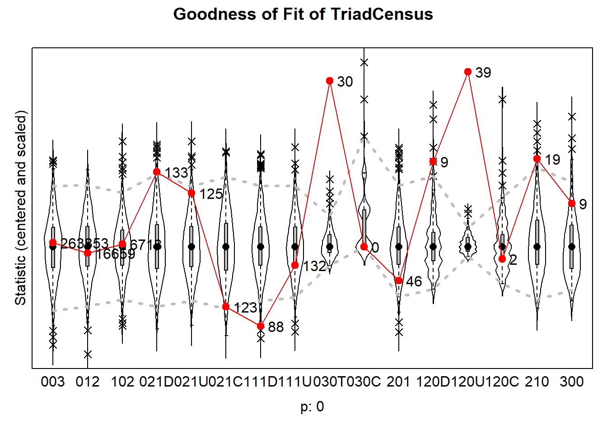
1.1.1.4 Behaviour distribution
plot(gofb0, center = T, scale = T)## Note: some statistics are not plotted because their variance is 0.
## This holds for the statistic: 7.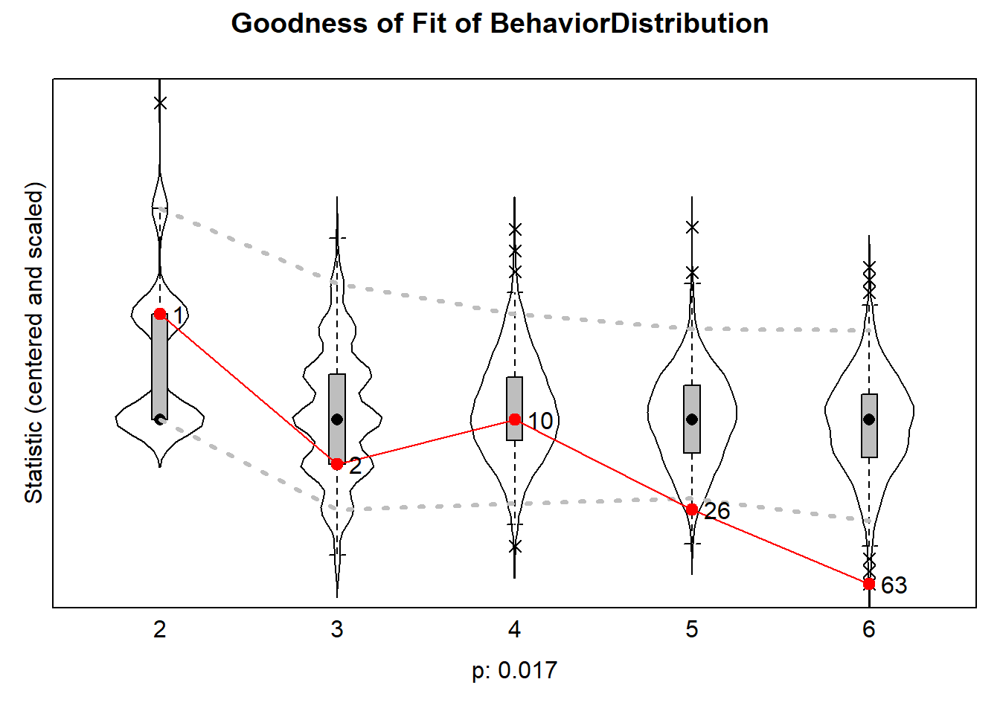
1.2 Model 1: Homogeneity in Reciprocated Ties
The first model converges at 0.12, which is lower than the 0.25 threshold and all convergence t-ratios are smaller than 0.1, with the maximum convergence t-ratio of -0.09. The underlying egoX and altX effects that were added previously, were taken out of the final model, as these effects were not significant. Density (b = -1.63, SE = 0.22) and reciprocity effects have (b = 1.86, SE = 0.23) have both decreased somewhat compared to the null-model, but still remain significant. The behavioural statistics have remained more or less the same as in the null model.
All of the added control statistics were also significant. The gwespFF statistic accounted for transitivity and was positive (b = 1.38, SE = 0.15), indicating that the students in the network have the tendency for transitive closure. Indegree popularity was negative, but remains close to zero (b = -0.08, SE = 0.03), showing that students who receive many incoming ties are slighlty less likely to receive any additional ones. Outdegree activity was also negative and also remained close to zero (b = -0.07, SE = 0.02), indicating that students who sent out many ties, are less likely to send out more ties. Finally, the out-isolate effect was positive (b = 3.3, SE = 0.48). This effect accounts for the fact that students who have not send out any ties, have a different level of attractiveness for indegrees.
There was no significant effect of same parental education level (b = -0.04, SE = 0.12, p = 0.75), and the value was close to zero, showing that students are not likely to send out more ties to others whose parents have enjoyed the same education level. This is not unexpected, as the descriptive analysis also showed that there is no segregation in the network. The value for reciprocated ties is negative, indicating that students are less likely to reciprocate a tie with students whose parents have the same educational level. However, this effect was not significant (b = -0.31, SE = 0.32, p = 0.33).
Table 2: Results of Model 1
pander::pander(results_m1)| effect | b | se | t | p |
|---|---|---|---|---|
| basic rate parameter netMLC | 11.13 | 1.109 | 10.04 | 1.005e-23 |
| outdegree (density) | -1.635 | 0.2253 | -7.258 | 3.927e-13 |
| reciprocity | 1.863 | 0.2372 | 7.855 | 3.989e-15 |
| GWESP I -> K -> J (69) | 1.385 | 0.1511 | 9.166 | 4.905e-20 |
| indegree - popularity | -0.08057 | 0.0318 | -2.534 | 0.01129 |
| outdegree - activity | -0.07383 | 0.02298 | -3.212 | 0.001317 |
| out-isolate | 3.302 | 0.4756 | 6.943 | 3.832e-12 |
| same parent_edu_ccv | -0.04047 | 0.1267 | -0.3194 | 0.7494 |
| same parent_edu_ccv x reciprocity | -0.3103 | 0.3167 | -0.9798 | 0.3272 |
| rate behMLC period 1 | 1.789 | 0.3459 | 5.172 | 0.0000002314 |
| behMLC linear shape | 0.1789 | 0.1521 | 1.176 | 0.2395 |
| behMLC quadratic shape | -0.3411 | 0.1642 | -2.077 | 0.03777 |
1.3 Model 2:
The second model also takes into account the control variables and converges at 0.14, with all convergence t-ratios smaller than 0.1. For gender and ethnicity, the egoX and alterX effects were also not significant and therefore taken out of the model. For this model, density (b = -1.89, SE = 0.27) and reciprocity (b = 1.97, SE = 0.35) slightly increased again, remaining significant. The other control statistics, as well as the behavioural statistics, stayed more or less the same.
The adding of the control variables did not affect the parent education p-values. The second hypothesis is therefore also rejected. The control variables show that students are only more likely to send out ties to students with the same gender (b = 0.29, SE = 0.13, p = 0.02), but there is no significant effect for this for ethnicity (b = 0.19, SE = 0.13, p = 0.13). Reciprocated ties did also not occur more between students with the same gender or ethnicity.
Table 3: Results of Model 2
pander::pander(results_m2)| effect | b | se | t | p |
|---|---|---|---|---|
| basic rate parameter netMLC | 11.31 | 1.032 | 10.95 | 6.362e-28 |
| outdegree (density) | -1.894 | 0.275 | -6.888 | 5.672e-12 |
| reciprocity | 1.969 | 0.3529 | 5.578 | 0.00000002436 |
| GWESP I -> K -> J (69) | 1.366 | 0.1454 | 9.393 | 5.836e-21 |
| indegree - popularity | -0.08152 | 0.03215 | -2.535 | 0.01123 |
| outdegree - activity | -0.07211 | 0.02414 | -2.987 | 0.002814 |
| out-isolate | 3.245 | 0.4564 | 7.109 | 1.166e-12 |
| same parent_edu_ccv | -0.03759 | 0.1326 | -0.2834 | 0.7768 |
| same parent_edu_ccv x reciprocity | -0.3209 | 0.3088 | -1.039 | 0.2987 |
| same gender_ccv | 0.2935 | 0.1308 | 2.244 | 0.02484 |
| same gender_ccv x reciprocity | -0.1217 | 0.3547 | -0.3431 | 0.7316 |
| same ethnicity_ccv | 0.1947 | 0.1307 | 1.489 | 0.1365 |
| same ethnicity_ccv x reciprocity | -0.121 | 0.3059 | -0.3955 | 0.6925 |
| rate behMLC period 1 | 1.788 | 0.3587 | 4.984 | 0.0000006221 |
| behMLC linear shape | 0.1809 | 0.1428 | 1.267 | 0.2051 |
| behMLC quadratic shape | -0.3392 | 0.147 | -2.308 | 0.02102 |
Goodness-of-Fit plots were generated for the whole model. The indegree-distribution plot now fits better than the first model and has a p-value of 0.08, which is a good thing. The plot shows that the amount of actors with zero in-degrees are still slightly underestimated and the amount of actors with one in-degree are slightly underestimated.
The outdegree plot has a p-value of 0.003, which is better than the null-model out-degree plot. The amount of actors with one out-degree are slightly underestimated, while the amount of actors with 3 or 4 out-degrees are slightly over-estimated.
The TriadCensus plot still has a p-value of 0, though the plot is more fitting than that of the null-model. There can be seen that especially the 021U, 030C and 120U triads are over-estimated.
1.3.1 Figure 3: Goodness Of Fit for Model 2
1.3.1.1 Indegree distribution
plot(gofi2)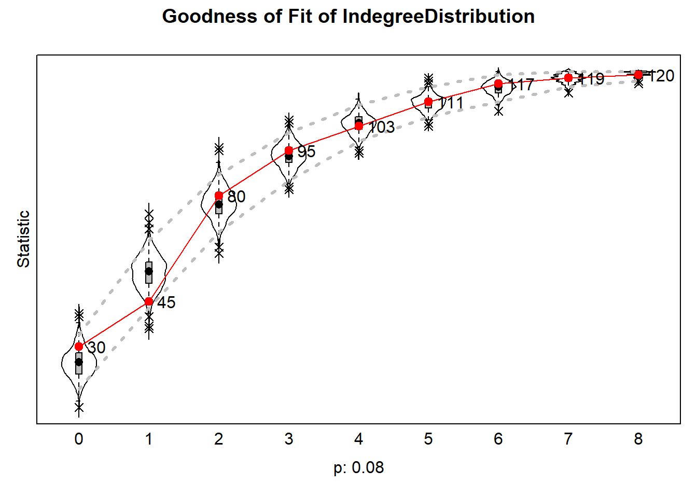
1.3.1.2 Outdegree distribution
plot(gofo2)1.3.1.3 TriadCensus
plot(gof2tc, center = T, scale = T)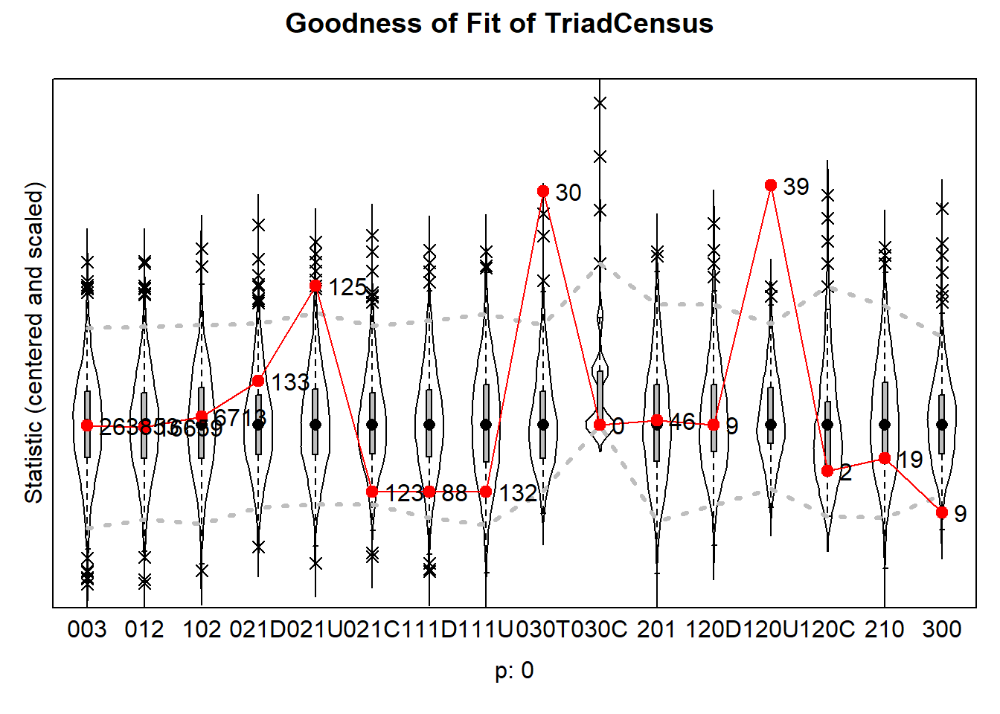
The relative influence measure can be used to assess the influence of each of the effects on network changes, relative to the other effects (Tolsma and Hofstra 2022). The plot reveals that the density, reciprocity, gwespFF, indegree popularity, outdegree activity and out-isolate effects have the biggest influence on network changes. This is no surprise, as these were also the effects that were significant. Moreover, the plot reveals what results have also shown, namely that same gender also has some influence on network changes. Parental education level does not seem to play a role at all, which is not surprising after the assessment of the results, and same ethnicity influences a small part.
Figure 4: Relative influence of effects on the network
plot(RI2[[1]], addPieChart = TRUE, radius = 1, width = 2.5, height = 2.5, legendColumns = 1, cex.legend = 0.6)
1.4 Model 3: Reciprocity and social satisfaction
This model delves into the behaviour statistics and assesses the effect of reciprocated ties on social satisfaction. The model converges at 0.17 and none of the convergence t-ratios exceed 0.1. The values for change in social satisfaction for linear shape have not changed much, but have increased for the quadratic shape (b = -0.4, SE = 0.23, p = 0.08). However, interestingly enough, this result is not significant anymore. Thus, while the tendency of students whose social satisfaction scores below the mean to move towards the mean seems to have increased, this effect is not significant anymore now that influence effects have been added.
The effect of the average social satisfaction of its reciprocated alters on ego is positive (b = 0.77, SE = 0.71, p = 0.28), indicating that average social satisfaction of a student’s friends influences their own social satisfaction. However, this effect was found not-significant.
The effect I am interested in for the hypothesis is the reciprocated degree effect. This effect is negative, but has a value close to zero (b = -0.06, SE = 0.11, p = 0.54), indicating that reciprocated ties have a slightly negative effect on social satisfaction. This effect was, however, not significant, meaning that hypothesis 3 can also be rejected.
Table 4: Results of Model 3
pander::pander(results_m3)| effect | b | se | t | p |
|---|---|---|---|---|
| basic rate parameter netMLC | 11.27 | 1.249 | 9.027 | 1.766e-19 |
| outdegree (density) | -1.875 | 0.26 | -7.214 | 5.426e-13 |
| reciprocity | 1.964 | 0.369 | 5.322 | 0.0000001027 |
| GWESP I -> K -> J (69) | 1.368 | 0.1595 | 8.578 | 9.671e-18 |
| indegree - popularity | -0.08031 | 0.03092 | -2.597 | 0.009395 |
| outdegree - activity | -0.07459 | 0.02225 | -3.353 | 0.0007998 |
| out-isolate | 3.295 | 0.4312 | 7.641 | 2.151e-14 |
| same parent_edu_ccv | -0.05031 | 0.1373 | -0.3663 | 0.7141 |
| same parent_edu_ccv x reciprocity | -0.3041 | 0.3119 | -0.975 | 0.3295 |
| same gender_ccv | 0.3003 | 0.1353 | 2.219 | 0.02647 |
| same gender_ccv x reciprocity | -0.1342 | 0.3617 | -0.3711 | 0.7106 |
| same ethnicity_ccv | 0.2051 | 0.1444 | 1.42 | 0.1555 |
| same ethnicity_ccv x reciprocity | -0.1248 | 0.3098 | -0.4029 | 0.687 |
| rate behMLC period 1 | 1.764 | 0.4113 | 4.289 | 0.00001794 |
| behMLC linear shape | 0.1792 | 0.1956 | 0.9162 | 0.3596 |
| behMLC quadratic shape | -0.4034 | 0.2323 | -1.737 | 0.08247 |
| behMLC average rec. alters | 0.7702 | 0.7146 | 1.078 | 0.2811 |
| behMLC reciprocated degree | -0.06761 | 0.1115 | -0.6067 | 0.5441 |
The Goodness of Fit distribution has a value of 0.059. This indicates that compared to the null model, this model has a better fit. However, the model still tends to overestimate the amount of people scoring a five or six on social satisfaction.
Figure 4: Goodness Of Fit for Model 3, Behaviour Distribution
plot(gofb3, center = T, scale = T)## Note: some statistics are not plotted because their variance is 0.
## This holds for the statistic: 7.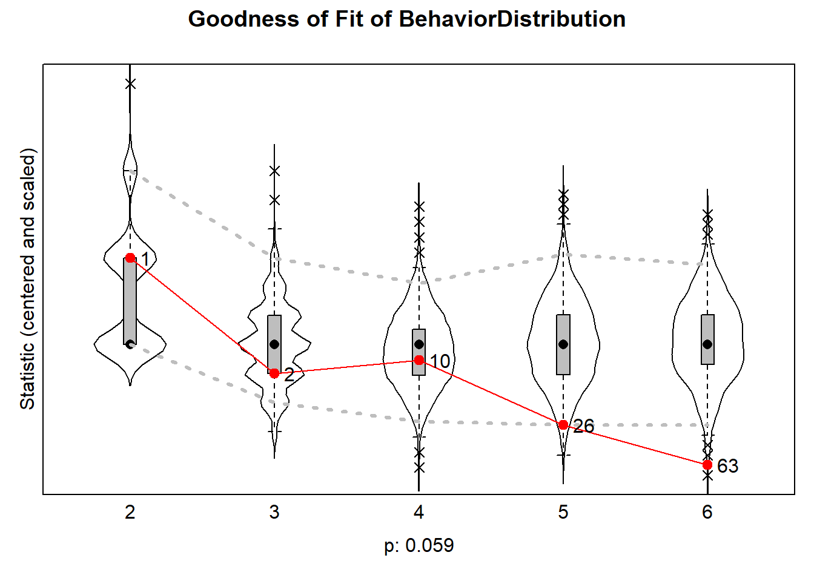
The relative influence plot for the behavioural effects reveals that the quadratic shape effect plays the biggest role in a change of social satisfaction. Next to that, the average social satisfaction of someone’s alters also plays a bigger role in these changes.
Figure 5: Relative influence of effects on behaviour
plot(RI3[[2]], addPieChart = TRUE, radius = 1, width = 2, height = 2, legendColumns = 1.2, cex.legend = 0.6)
1.5 Model 4: Homogeneity in Reciprocated Ties ties with control variables
Model 4 converges at a ratio of 0.21 and its converged t-ratios remain below 0.1 The adding of the two effects have changed the effects of the linear and the quadratic shape. The effect of the linear shape has moved closer to zero (b = 0.06, SE = 0.25). The quadratic shape, to the contrary, has increased, though it is still not significant (b = -0.48, SE = 0.26, p = 0.06). Both the average influence of reciprocated alters effect (b = 0.83, SE = 1.17) and the effect of reciprocated ties on social satisfaction (b = -0.29, SE = 0.26) have become stronger, though remain not significant.
The effect of reciprocated ties between students whose parents have the same educational level on social satisfaction is positive (b = 1.43, SE = 1.43, p = 0.33), indicating that if students befriend other students whose parents have the same educational level, this increases their social satisfaction. The effect was, however, not significant. The effect of average social satisfaction of students whose parents have enjoyed the same education level with whom ego has a reciprocated tie is close to zero (b = -0.01, SE = 1.29, p = 0.99), indicating that this has no influence on a student’s change in social satisfaction. Following from this, there can be concluded that hypothesis 4 is also rejected.
Table 5: Results of Model 4
pander::pander(results_m4)| effect | b | se | t | p |
|---|---|---|---|---|
| basic rate parameter netMLC | 11.34 | 1.136 | 9.982 | 1.823e-23 |
| outdegree (density) | -1.88 | 0.2815 | -6.677 | 2.444e-11 |
| reciprocity | 1.949 | 0.3339 | 5.838 | 0.000000005276 |
| GWESP I -> K -> J (69) | 1.357 | 0.1631 | 8.32 | 8.767e-17 |
| indegree - popularity | -0.08007 | 0.03346 | -2.393 | 0.01672 |
| outdegree - activity | -0.07263 | 0.02541 | -2.858 | 0.004257 |
| out-isolate | 3.296 | 0.5261 | 6.265 | 0.0000000003718 |
| same parent_edu_ccv | -0.03826 | 0.1252 | -0.3056 | 0.7599 |
| same parent_edu_ccv x reciprocity | -0.3208 | 0.3188 | -1.006 | 0.3144 |
| same gender_ccv | 0.2865 | 0.1373 | 2.087 | 0.03686 |
| same gender_ccv x reciprocity | -0.1099 | 0.3463 | -0.3174 | 0.7509 |
| same ethnicity_ccv | 0.1961 | 0.1367 | 1.434 | 0.1516 |
| same ethnicity_ccv x reciprocity | -0.1124 | 0.2932 | -0.3832 | 0.7016 |
| rate behMLC period 1 | 1.707 | 0.3474 | 4.912 | 0.000000901 |
| behMLC linear shape | 0.06284 | 0.254 | 0.2474 | 0.8046 |
| behMLC quadratic shape | -0.4836 | 0.2616 | -1.849 | 0.0645 |
| behMLC average rec. alters | 0.8365 | 1.174 | 0.7122 | 0.4763 |
| behMLC reciprocated degree | -0.285 | 0.2607 | -1.093 | 0.2743 |
| behMLC: rec. alt’s (netMLC) same parent_edu_ccv av. | 1.427 | 1.472 | 0.9692 | 0.3324 |
| behMLC: average rec. alter (netMLC) for same parent_edu_ccv | -0.00974 | 1.286 | -0.007574 | 0.994 |
Interestingly enough, the Goodness of Fit of this model is, with a p-value of 0.036, a worse fit than the previous one. Here as well, the model tends to overestimate the amount of people scoring a 5 or 6 on social satisfaction. This Goodness of Fit indicates that the added variables did not help with explaining change in behaviour for the network.
Figure 6: Goodness of Fit for Model 4, Behaviour distribution
plot(gofb4)## Note: some statistics are not plotted because their variance is 0.
## This holds for the statistic: 7.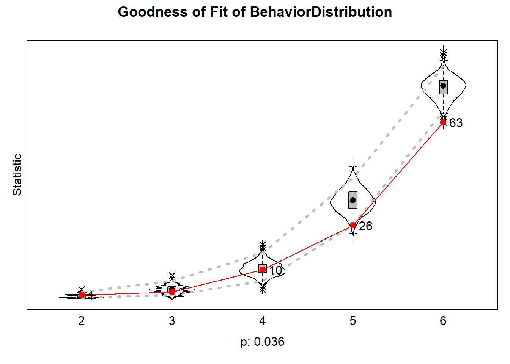
As for Figure 5, there can be seen in Figure 7 as well that the quadratic shape effect has the most influence on changes in behaviour. What also follows from the figure is that having reciprocted ties between alters with the same parental education level also has quite some influence on changes in social satisfaction, more than having reciprocated ties in general or the average social satisfaction of one’s alters.
Figure 7: Relative influence on behaviour
plot(RI4[[2]], addPieChart = TRUE, legendColumns = 1, radius = 1, width = 2, height = 2, cex.legend = 0.6)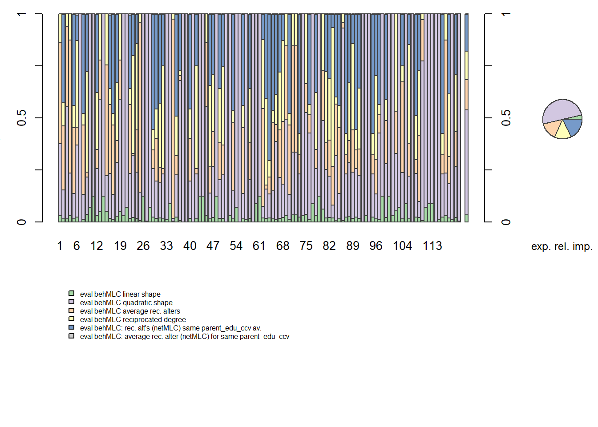
2 RCode
2.1 Model 0: Simple Model
simple_model <- siena07(myAlgorithm, data = mydata, effects = myeff, thetaBound = 10000, returnDeps = T)
#saveRDS(simple_model, "simple_model.rds")2.2 Model 1: Homogeneity in reciprocated ties
myeff1<- includeEffects(myeff, egoX, altX, sameX, sameXRecip, interaction1 = "parent_edu_ccv") ## effectNumber effectName shortName include fix test
## 1 265 parent_edu_ccv alter altX TRUE FALSE FALSE
## 2 280 parent_edu_ccv ego egoX TRUE FALSE FALSE
## 3 336 same parent_edu_ccv sameX TRUE FALSE FALSE
## 4 342 same parent_edu_ccv x reciprocity sameXRecip TRUE FALSE FALSE
## initialValue parm
## 1 0 0
## 2 0 0
## 3 0 0
## 4 0 0myeff <- includeEffects(myeff, sameX, sameXRecip, interaction1 = "parent_edu_ccv") #egoX and altX not significant so can be left out## effectNumber effectName shortName include fix test
## 1 336 same parent_edu_ccv sameX TRUE FALSE FALSE
## 2 342 same parent_edu_ccv x reciprocity sameXRecip TRUE FALSE FALSE
## initialValue parm
## 1 0 0
## 2 0 0model1.1 <- siena07(myAlgorithm, data = mydata, effects = myeff, thetaBound = 10000, returnDeps = T)
#saveRDS(model1.1, "model1.1.rds")model1.1 <- readRDS("model1.1.rds")
gofi1.1 <- sienaGOF(model1.1, IndegreeDistribution, verbose = FALSE, join = TRUE, varName = "netMLC")
gofo1.1 <- sienaGOF(model1.1, OutdegreeDistribution, verbose = FALSE, join = TRUE, varName = "netMLC")
#gof0.gd <- sienaGOF(model1.1, GeodesicDistribution, cumulative = FALSE, verbose = FALSE, join = TRUE, varName = "netMLC")
# Doet het niet
gof1.1.tc <- sienaGOF(model1.1, TriadCensus, verbose = FALSE, join = TRUE, varName = "netMLC")plot(gofi1.1)plot(gofo1.1)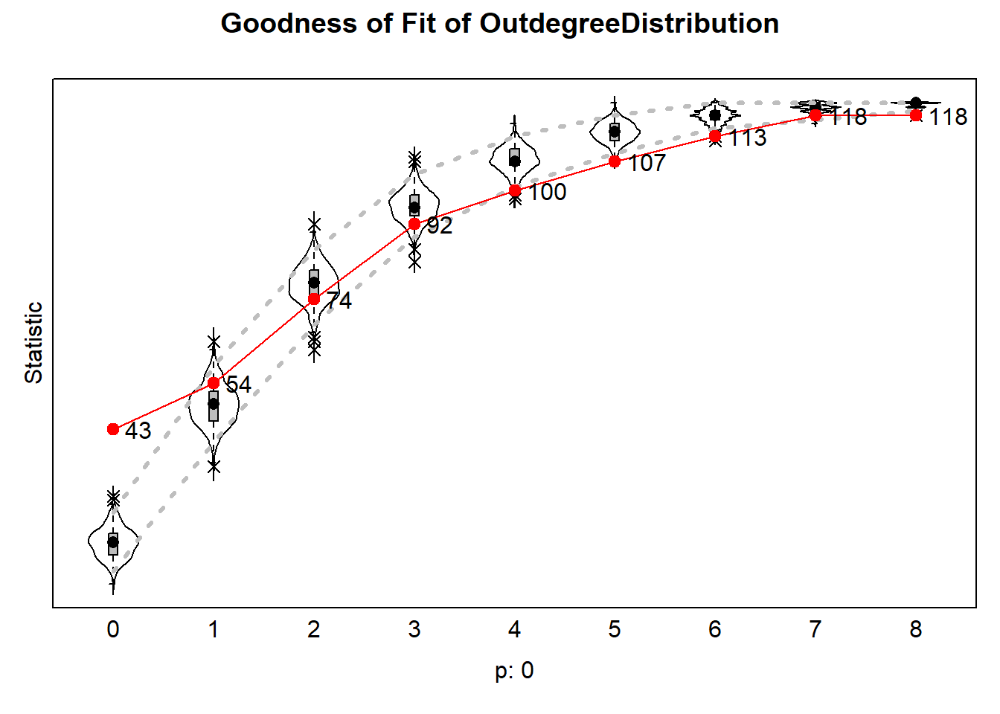
plot(gof1.1.tc, center = T, scale = T)
WELL, that does not very good. But that’s not weird, because I have not added any additional effects. Let’s add a triad effect :)
myeff <- includeEffects(myeff, gwespFF) ## effectNumber effectName shortName include fix test initialValue
## 1 57 GWESP I -> K -> J (#) gwespFF TRUE FALSE FALSE 0
## parm
## 1 69model1.2 <- siena07(myAlgorithm, data = mydata, effects = myeff, thetaBound = 10000, returnDeps = T)
model1.2
#saveRDS(model1.2, "model1.2.rds")model1.2 <- readRDS("model1.2.rds")
gofi1.2 <- sienaGOF(model1.2, IndegreeDistribution, verbose = FALSE, join = TRUE, varName = "netMLC")
gofo1.2 <- sienaGOF(model1.2, OutdegreeDistribution, verbose = FALSE, join = TRUE, varName = "netMLC")
gof1.2.tc <- sienaGOF(model1.1, TriadCensus, verbose = FALSE, join = TRUE, varName = "netMLC")plot(gofi1.2)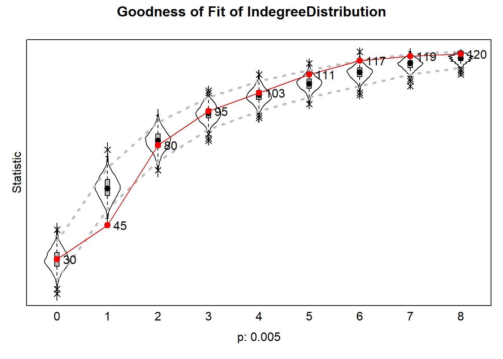
plot(gofo1.2)plot(gof1.2.tc, center = T, scale = T)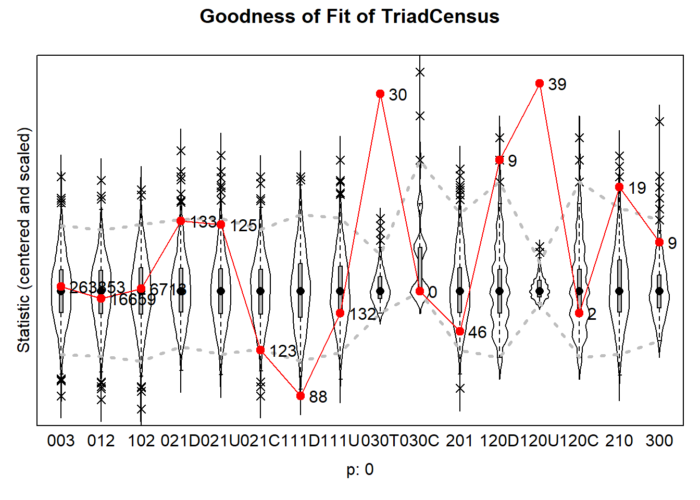
Another one…
myeff1.3 <- includeEffects(myeff, inPop, outAct, outIso) ## effectNumber effectName shortName include fix test initialValue
## 1 81 indegree - popularity inPop TRUE FALSE FALSE 0
## 2 118 outdegree - activity outAct TRUE FALSE FALSE 0
## 3 149 out-isolate outIso TRUE FALSE FALSE 0
## parm
## 1 0
## 2 0
## 3 1model1.3 <- siena07(myAlgorithm, data = mydata, effects = myeff1.3, thetaBound = 10000, returnDeps = T)
model1.3
#saveRDS(model1.3, "model1.rds")model1.3 <- readRDS("model1.rds")
gofi1.3 <- sienaGOF(model1.3, IndegreeDistribution, verbose = FALSE, join = TRUE, varName = "netMLC")
gofo1.3 <- sienaGOF(model1.3, OutdegreeDistribution, verbose = FALSE, join = TRUE, varName = "netMLC")
gof1.3.tc <- sienaGOF(model1.3, TriadCensus, verbose = FALSE, join = TRUE, varName = "netMLC")plot(gofi1.3)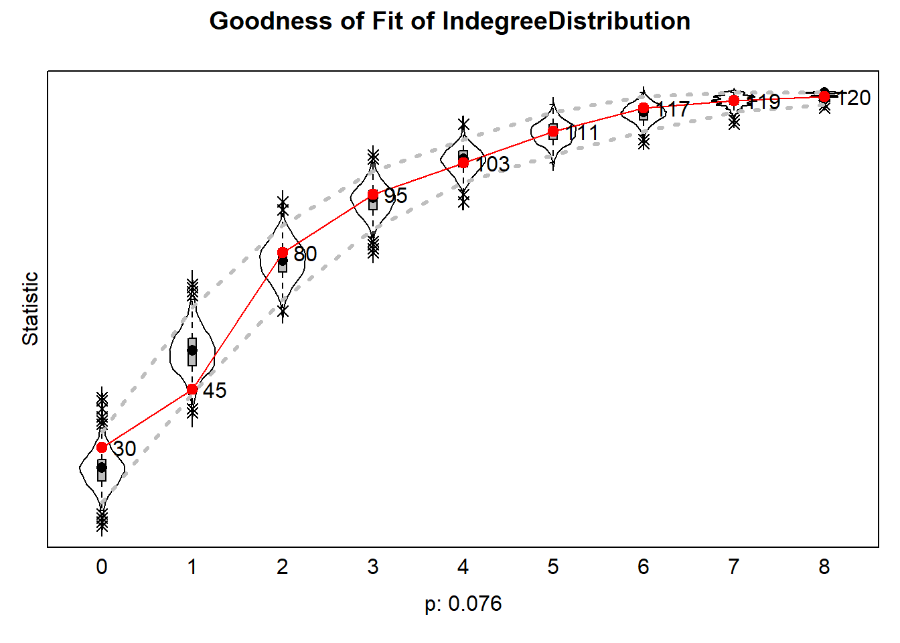
plot(gofo1.3)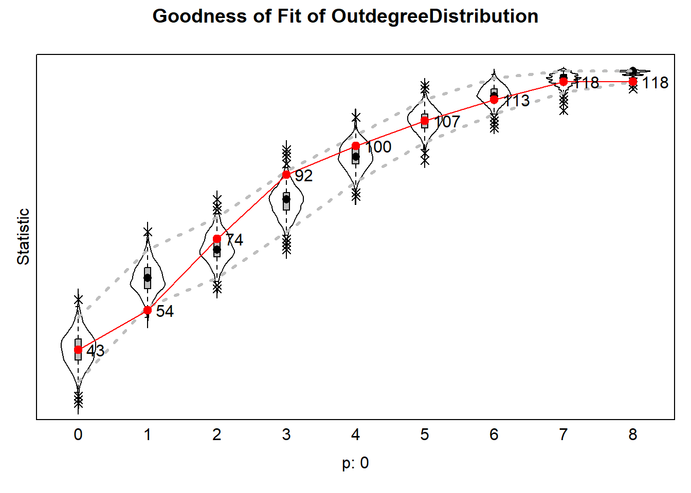
plot(gof1.3.tc, center = T, scale = T)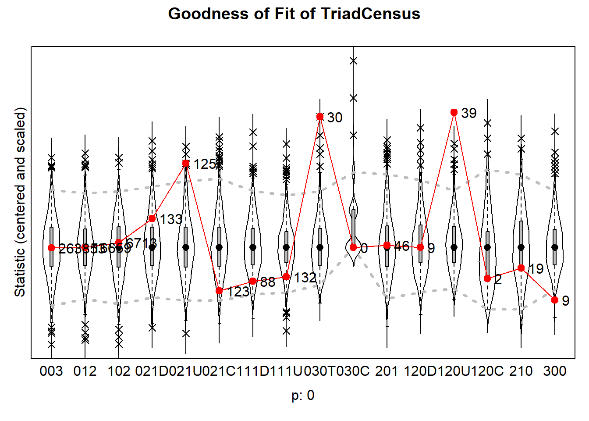
RI <- interpret_size(model1, data = mydata, theta = theta.eval, addPieChart = T, legend = T, getChangeStats = T)## more than one dependent variable
## return value is therefore not of class 'sienaRI'
## but a list of objects of class 'sienaRI'.plot(RI[[1]], addPieChart = TRUE, legendColumns = 3)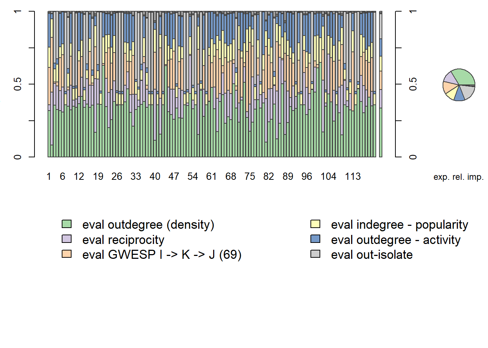
plot(RI[[2]], addPieChart = TRUE, legendColumns = 3)2.3 Model 2: Homogeneity in reciprocated ties with control variables
myeff2 <- includeEffects(myeff1.3, sameX, sameXRecip, interaction1 = "gender_ccv")## effectNumber effectName shortName include fix test
## 1 520 same gender_ccv sameX TRUE FALSE FALSE
## 2 526 same gender_ccv x reciprocity sameXRecip TRUE FALSE FALSE
## initialValue parm
## 1 0 0
## 2 0 0myeff2 <- includeEffects(myeff2, sameX, sameXRecip, interaction1 = "ethnicity_ccv")## effectNumber effectName shortName include fix test
## 1 704 same ethnicity_ccv sameX TRUE FALSE FALSE
## 2 710 same ethnicity_ccv x reciprocity sameXRecip TRUE FALSE FALSE
## initialValue parm
## 1 0 0
## 2 0 0model2 <- siena07(myAlgorithm, data = mydata, effects = myeff2, thetaBound = 10000, returnDeps = T)
model2
#saveRDS(model2, "model2.rds")